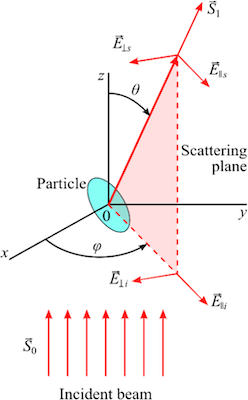
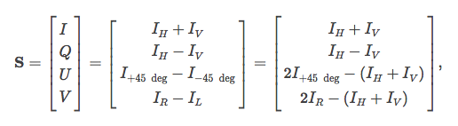

This page was generated from `source/notebooks/L4/Lecture 4.ipynb`_.

Introduction to Photonics II¶
Lecture 4¶
Frank Cichos, SS2019
[2]:
import numpy as np
import matplotlib.pyplot as plt
import miepython as mp
%matplotlib inline
%config InlineBackend.figure_format = 'retina'
plt.rcParams.update({'font.size': 16,
'axes.titlesize': 16,
'axes.labelsize': 14,
'axes.labelpad': 14,
'lines.linewidth': 1,
'lines.markersize': 10,
'xtick.labelsize' : 14,
'ytick.labelsize' : 14,
'xtick.top' : True,
'xtick.direction' : 'in',
'ytick.right' : True,
'ytick.direction' : 'in',})
---------------------------------------------------------------------------
ModuleNotFoundError Traceback (most recent call last)
<ipython-input-2-3e50f40c4c8f> in <module>
1 import numpy as np
2 import matplotlib.pyplot as plt
----> 3 import miepython as mp
4
5 get_ipython().run_line_magic('matplotlib', 'inline')
ModuleNotFoundError: No module named 'miepython'
Light Scattering¶
The scattering of light may be thought of as the redirection of light that takes place when an electromagnetic (EM) wave encounters a scattering particle. As the EM wave interacts with the particle, the electrons in the particle’s constituent molecules are perturbed periodically with the frequency \(\omega\) of the electric field of the incident wave. The oscillation or perturbation of the electron cloud results in a periodic separation of charge within the molecule, which is called an induced dipole moment \(\vec{p}(t)\). We have looked at these details from a semi-classical side with the help of the two level system in the lecture before.
The majority of light scattered by the particle is emitted at the identical frequency \(\omega\) of the incident light, a process referred to as elastic scattering. In summary, the above comments describe the process of light scattering as a complex interaction between the incident EM wave and the molecular/atomic structure of the scattering object; hence light scattering is not simply a matter of incident photons or EM waves bouncing off the surface of an encountered object.
Elastic light scattering may be categorized into different frameworks. The framework we will be looking at first is the Rayleight-Debye-Gans theory, which has some simplifications but gives us a general understanding of what is happening when light is scattered at the materials. We will then continue with
Rayleigh Scattering
Mie Scattering
Rayleigh scattering is formulated for small, dielectric (non-absorbing), spherical particles. It actually arises as the small particle limit of Mie scattering that encompasses the general spherical scattering solution (absorbing or non-absorbing) without a particular bound on particle size. Accordingly, Mie scattering theory has no size limitations and converges to the limit of geometric optics for large particles. Mie theory, therefore, may be used for describing most spherical particle scattering systems, including Rayleigh scattering. However, Rayleigh scattering theory is generally preferred if applicable, due to the complexity of the Mie scattering formulation. The criteria for Rayleigh scattering is that
\begin{equation} \alpha<<1 \end{equation}
and
\begin{equation} |m| \alpha<<1 \end{equation}
where \(\alpha<<1\) is the dimensionless size parameter given by the expression
\begin{equation} \alpha=\frac{2\pi R}{\lambda} \end{equation}
with \(\lambda=\lambda_{0}/m_{0}\). Here \(\lambda_{0}\) is the vacuum wavelength, \(m_{0}\) the refractive index of the surrounding medium and \(m\) the refractive index of the particle, which can be in general complex, i.e. \(m=n-i\, \kappa\). In this notation, \(n\) indicates the refraction of light (i.e. n equals the speed of light in vacuum divided by the speed of light in the material), while the complex term is related to absorption. The commonly used absorption coefficient of the material \((cm^{-1})\) is related to the complex part of the refractive index via the relation
\begin{equation} a=\frac{4\pi \kappa}{\lambda} \end{equation}
It is noted that the value of \(\kappa\) is never exactly zero for any material, but materials with a value approaching zero are termed dielectrics. The magnitude of the refractive index, \(|m|\) , as needed for the Rayleigh criteria, is given by the expression
\begin{equation} |m|=\sqrt{n^{2}+\kappa^{2}} \end{equation}
The Rayleigh criteria as related above, namely \(\alpha <<1\) and \(|m|\alpha<<1\), correspond physically to the assumptions that the particle is sufficiently small such that the particle encounters a uniform electric field at any moment, accordingly the time for penetration of the electric field is much less than the period of oscillation of the EM wave.
Rayleigh scattering now refers to the situation, when all particles are just point dipoles, so there is no interference from the scattering volumes of a particle itself. In the case of Mie scattering, the simplifications of the Rayleigh Debye Gans theory are dropped and exact calculation are carried out including the phase shifts in spherical particles as well as well as the proper boundary conditions between dielectrics. While Mie scattering is valid for all different sizes and generalized versions for inhomogeneous dielectric materials exist, the physical understanding is a bit lost due to the mathematical expansions carried out.
General Electromagnetic Scattering Appraoch¶

The Figure above shows the spherical coordinate scattering geometry used for Mie and Rayleigh light scattering corresponding to an incident plane wave with a wavevector \(\vec{k}\) on a single spherical particle. Using this coordinate system, the scattering parameters may be defined for the Rayleigh and Mie solutions.
For each scattering angle \((\phi,\theta)\), the Equations
\begin{equation} I_{\phi}=I_{0}\frac{\lambda^2}{4\pi^2 r^{2}}i_{1}\sin(\phi)^2 \end{equation}
and
\begin{equation} I_{\theta}=I_{0}\frac{\lambda^2}{4\pi^2 r^{2}}i_{2}\cos(\phi)^2 \end{equation}
represent the intensities \((W/cm^2)\) of scattered radiation vertically and horizontally polarized with respect to the scattering plane, respectively, which is defined by the incident ray (of intensity \(I_{0}\)) and the scattered wavevector \(\vec{k}_{s}\), noting the polarization state of the incident ray as shown in the Figure. The parameters \(i_{1}\) and \(i_{2}\) are the magniture square \(i_{1}=|S_{1}|^2\) and \(i_{2}=|S_{2}|^2\) elements of the amplitude scattering matrix (also called Jones matrix)
\begin{equation} \begin{bmatrix} S_{2} & S_{3}\\ S_{4} & S_{1}\\ \end{bmatrix} \end{equation}
The Jones matrix connects the incident electric field components with the scattered electric field components with respect to the scattering plane.
\begin{equation} \begin{bmatrix} E_{|| s}\\ E_{\perp s} \end{bmatrix} \propto \begin{bmatrix} S_{2} & S_{3}\\ S_{4} & S_{1} \end{bmatrix} \begin{bmatrix} E_{||i}\\ E_{\perp i} \end{bmatrix} \end{equation}
However, more often, Stokes or Mueller polarimeters based on intensity measurements of polarized light are used. In that case, light of an arbitrary polarization can be represented by four numbers known as the Stokes parameters, \(I,Q,U, V\) with \(I^2=Q^2+U^2+V^2\), where \(I\) refers to the intensity of the light, and the parameters \(Q,U,V\) represent the extent of the horizontal linear, $ 45^{\circ}}$ linear, and circular polarization, respectively.In polarimetry, the Stokes vector \(S\) of a light beam is constructed based on six flux measurements obtained with different polarization analyzers in front of the detector, represent the extent of the horizontal linear, 45 deg linear, and circular polarization, respectively.

The incident Stokes vector \(S_{i}\) and the scattered Stokes Vector \(S_{scat}\) are then connected by the so called Müller matrix \(M\)
\begin{equation} {\bf S}_{scat}=M\,{\bf S} _{i} \end{equation}
Here, we continue with the simpler amplitude scattering matrix described above. For perfectly spherical particles, polarized incident radiation produces similarly polarized scattered radiation (i.e. \(S_{3}=S_{4}=0\)); hence the scattering problem may be redefined in terms of the polarization states with respect to the scattering plane. Accordingly, the two above equations may be recast in terms of the differential scattering cross sections \((cm^2/sr)\), namely
\begin{equation} I_{VV}=I_{0}\frac{1}{r^2}\frac{d\sigma_{VV}}{d\Omega} \end{equation}
\begin{equation} I_{HH}=I_{0}\frac{1}{r^2}\frac{d\sigma_{HH}}{d\Omega} \end{equation}
Rayleigh Theory¶
In the Rayleigh regime, the differential scattering cross sections are readily calculated from the following equations:
\begin{equation} \frac{d\sigma_{VV}}{d\Omega}=\frac{\lambda^2}{4\pi^2}\alpha^{6}\left | \frac{\bar{m}^2-1}{\bar{m}^2+2}\right |^{2}= k^{4}R^{6}\left ( \frac{\epsilon-\epsilon_{m}}{\epsilon+2\epsilon_{m}} \right )^{2} \end{equation}
and
\begin{equation} \frac{d\sigma_{HH}}{d\Omega}=\frac{d\sigma_{VV}}{d\Omega} \cos(\theta)^{2}=k^{4}R^{6}\left ( \frac{\epsilon-\epsilon_{m}}{\epsilon+2\epsilon_{m}} \right )^{2}\cos(\theta)^2 \end{equation}
Examination of these equations reveals several interesting items. Functionally, the differential scattering cross sections are proportional to the 6th power of particle size \(R\), and are inversely proportional to the 4th power of wavelength \(\lambda\). This latter dependency gives rise to the blue color of our sky, as the air molecules (e.g. \(N_2\) and \(O_2\)) are well within the Rayleigh regime; hence the shorter blue light of the sun is more efficiently redirected out of the direct path of sunlight and subsequently redirected from all directions as scattered light. In addition, note that the vertical-vertical differential scattering cross section is independent of the observation angle \(\theta\), while the horizontal-horizontal differential scattering cross section has a minimum at \(90^{\circ}\). This implies that unpolarized light will be strongly polarized at \(90^{\circ}\) observation for Rayleigh particles.
The total scattering cross section (\(cm^2\)) and absorption cross section (\(cm^2\)) are defined as
\begin{equation} \sigma_{scat}=\frac{2\lambda^2}{3\pi}\alpha^{6}\left | \frac{\bar{m}^2-1}{\bar{m}^2+2}\right |^{2} \end{equation}
\begin{equation} \sigma_{abs}=\frac{-\lambda^2}{\pi}\alpha^{3}Im\left \lbrace\frac{\bar{m}^2-1}{\bar{m}^2+2}\right \rbrace \end{equation}
Note that \(\alpha\) is the size parameter \(\alpha=2\pi R/\lambda\). Finally, the total extinction cross section (\(cm^2\)) is defined as a sum of the scattering and absorption cross sections.
As represented by the cross sections, the scattering cross section scales with \(R^6\), while the absorption cross section is proportional to \(R^{3}\). In the Rayleigh regime, the size parameter must be much less than unity, therefore the contribution of scattering (i.e. \(\sigma_{scate}\) ) to the total extinction cross section is generally neglected for an absorbing particle ( \(\kappa\neq 0\) ), and it is therefore assumed that \(\sigma_{ext}=\sigma_{abs}\). However, for a dielectric particle ( \(\kappa=0\)), then \(\sigma_{ext}=\sigma_{scat}\), as the contribution of absorption is identically zero (\(\sigma_{abs}=0\)).
Mie Theory¶
Based on the theory of Mie, the differential scattering cross sections are defined in terms of the angular intensity functions \(i_{1}\) and \(i_{2}\), as given by the expressions
\begin{equation} \frac{d\sigma_{VV}}{d\Omega}=\frac{\lambda^{2}}{4\pi^2}i_{1} \end{equation}
and
\begin{equation} \frac{d\sigma_{HH}}{d\Omega}=\frac{\lambda^{2}}{4\pi^2}i_{2} \end{equation}
As before, the above two equations are averaged to define the differential scattering cross section for unpolarized incident light, which gives the relation
\begin{equation} \frac{d\sigma_{scat}}{d\Omega}=\frac{\lambda^{2}}{8\pi^2}(i_{1}+i_{2}) \end{equation}
In this formulation, the intensity functions are calculated from the infinite series given by
\begin{equation} i_{1}=\left |\sum_{n=1}^{\infty}\frac{2n+1}{n(n+1}[a_{n}\pi_{n}(\cos(\theta))+b_{n}\tau_{n}(\cos(\theta))] \right|^{2} \end{equation}
\begin{equation} i_{2}=\left |\sum_{n=1}^{\infty}\frac{2n+1}{n(n+1}[a_{n}\tau_{n}(\cos(\theta))+b_{n}\pi_{n}(\cos(\theta))] \right|^{2} \end{equation}
In these equations, the angular dependent functions \(\pi_{n}\) and \(\tau_{n}\) are expressed in terms of the Legendre polynomials by
\begin{equation} \pi_{n}(\cos(\theta))=\frac{P_{n}^{(1)}(\cos(\theta))}{\sin(\theta)} \end{equation}
and
\begin{equation} \tau_{n}(\cos(\theta))=\frac{dP_{n}^{(1)}(\cos(\theta))}{d\theta} \end{equation}
where the parameters \(a_{n}\) and \(b_{n}\) are defined as
\begin{equation} a_{n}=\frac{\Psi_{n}(\alpha)\Psi_{n}^{\prime}(m\alpha)-m\Psi_{n}(m\alpha)\Psi_{n}^{\prime}(\alpha)}{\xi_{n}(\alpha)\Psi_{n}^{\prime}(m\alpha)-m\Psi_{n}(m\alpha)\xi_{n}^{\prime}(\alpha)} \end{equation}
\begin{equation} b_{n}=\frac{m\Psi_{n}(\alpha)\Psi_{n}^{\prime}(m\alpha)-\Psi_{n}(m\alpha)\Psi_{n}^{\prime}(\alpha)}{m\xi_{n}(\alpha)\Psi_{n}^{\prime}(m\alpha)-\Psi_{n}(m\alpha)\xi_{n}^{\prime}(\alpha)} \end{equation}
The size parameter \(\alpha\) is defined using
\begin{equation} \alpha=\frac{2\pi R m_{0}}{\lambda_{0}} \end{equation}
The Ricatti-Bessel functions \(\Psi\) and \(\xi\) are defined in terms of the half-integer-order Bessel function of the first kind (\(J_{n+1/2}(z)\)), where
\begin{equation} \Psi_{n}(z)=\sqrt{\frac{\pi z}{2}} J_{n+1/2}(z) \end{equation}
\begin{equation} \xi_{n}(z)=\sqrt{\frac{\pi z}{2}} H_{n+1/2}(z)=\Psi_{n}(z)+iX_{n}(z) \end{equation}
where \(H_{n+1/2}(z)\) is the half-integer-order Hankel function of the second kind, where the parameter \(X_{n}\) is defined in terms of the half-integer-order Bessel function of the second kind, $Y_{n+1/2}(z), namely
\begin{equation} X_{n}(z)=-\sqrt{\frac{\pi z}{2}}Y_{n+1/2}(z) \end{equation}
Finally, the total extinction and scattering cross sections are expressed as
\begin{equation} \sigma_{ext}=\frac{\lambda^{2}}{2\pi}\sum_{n=0}^{\infty}(2n+1)Re\{a_{n}+b_{n}\} \end{equation}
and
\begin{equation} \sigma_{scat}=\frac{\lambda^{2}}{2\pi}\sum_{n=0}^{\infty}(2n+1)(|a_{n}|^2+|b_{n}|^2) \end{equation}
noting that the absorption cross section is readily calculated from the above two.
Mie Scattering Example Calculations¶
There are a number of different packages around providing th erequired functions for Mie and thus also Rayleight scattering calculations. In the examples below I have used the Python package miepython, which is freely available for Python and allows a number of different calculations.
The following example calculates the extinction efficiency \(Q_{ext}=\sigma_{ext}/\pi R^2\) as a function of the size parameter \(\alpha=2\pi R/\lambda\). For small Rayleigh particles (refractive index \(m=1.5\)), the extinction cross section is much smaller than the geometric cross section. Later the extinction efficiency is displaying a oscillatory behavior, which is due to the interference of the scattering coming from different subvolumes of the particle. At very large particle sizes, the extinction efficiency reaches a value of 2, stating that the extinction cross section is twice as large as the geometric cross section. This surprising effect is known as the extinction paradox and is suggested to be due to the fact that an ideal extinction measurement is carried out at infinite distance from the object and thus also sensitive to diffraction of light around the particle.
[1]:
num = 2000
x = np.linspace(0,20,num)
qqext1 = np.zeros(num)
qqext2 = np.zeros(num)
for i in range(num) :
qext, qsca, qback, g = mp.mie(1.5,x[i])
qqext1[i]=qsca
qext, qsca, qback, g = mp.mie(1.5-0.1j,x[i])
qqext2[i]=qext
plt.figure(figsize=(12,7))
plt.plot(x*532/2/np.pi ,qqext1)
plt.axvline(x=1,color='black',linestyle='--')
plt.axhline(y=2,linestyle='--',color='k')
plt.xlabel(r'Size Parameter ($\alpha$)')
plt.ylabel(r'ewxtinction efficiency $Q_ext$')
plt.show()
---------------------------------------------------------------------------
NameError Traceback (most recent call last)
<ipython-input-1-3edc0045b61d> in <module>
1 num = 2000
2
----> 3 x = np.linspace(0,20,num)
4 qqext1 = np.zeros(num)
5 qqext2 = np.zeros(num)
NameError: name 'np' is not defined
The next example plots are showing the scaterring intensities of a particle of 5 times the wavelength radius and a refractive index of \(m=1.5\) as a function of the scattering angle \(\theta\). The plots contain the logarithm of the differential scattering cross section for the two polarization directions as otherwise the backscattering would be only hardly visible. Large particles as compared to the wavelength are strongly scattering into the forward direction.
Small Particle Scattering¶
[7]:
m = 1.5
n_env=1.33
lam=532 #nm
R=50 # in nm
x = 2*np.pi*R/(lam/n_env)
theta = np.linspace(-180,180,180)
mu = np.cos(theta/180*np.pi)
scat_par = mp.i_par(m/n_env,x,mu)
scat_per = mp.i_per(m/n_env,x,mu)
fig,ax = plt.subplots(1,2,figsize=(12,7))
ax=plt.subplot(121, projection='polar')
ax.plot(theta/180*np.pi,np.log(scat_par))
ax.plot(theta/180*np.pi,np.log(scat_per))
ax.set_rticks([])
ax.set_title('m=1.5, Sphere Radius = {} nm'.format(R))
plt.subplot(122)
plt.semilogy(theta,(scat_par))
plt.semilogy(theta,(scat_per))
plt.xlabel('Exit Angle [degrees]')
plt.ylabel('Unpolarized Scattered light [1/sr]')
plt.title('m=1.5, Sphere Radius = {} nm'.format(R))
#plt.ylim(0.00,0.2)
plt.tight_layout()
plt.show()
{kind=link}
Large Particle Scattering¶
[8]:
m = 1.5
n_env=1.33
lam=532 #nm
R=500 # in nm
x = 2*np.pi*R/(lam/n_env)
theta = np.linspace(-180,180,180)
mu = np.cos(theta/180*np.pi)
scat_par = mp.i_par(m/n_env,x,mu)
scat_per = mp.i_per(m/n_env,x,mu)
fig,ax = plt.subplots(1,2,figsize=(12,7))
ax=plt.subplot(121, projection='polar')
ax.plot(theta/180*np.pi,np.log(scat_par))
ax.plot(theta/180*np.pi,np.log(scat_per))
ax.set_rticks([])
ax.set_title('m=1.5, Sphere Radius = {} nm'.format(R))
plt.subplot(122)
plt.semilogy(theta,(scat_par))
plt.semilogy(theta,(scat_per))
plt.xlabel('Exit Angle [degrees]')
plt.ylabel('Unpolarized Scattered light [1/sr]')
plt.title('m=1.5, Sphere Radius = {} nm'.format(R))
#plt.ylim(0.00,0.2)
plt.tight_layout()
plt.show()
{kind=link}
The last example demonstrates the scattering cross section as a function of the wavlength for gold nanoparticles.
Gold Particle Scattering¶
[10]:
# from https://refractiveindex.info/?shelf=main&book=Au&page=Johnson
# wavelength in microns
ref_lam=np.array([0.1879,0.1916,0.1953,0.1993,0.2033,0.2073,0.2119,0.2164,0.2214,0.2262,0.2313,0.2371,0.2426,0.2490,0.2551,0.2616,0.2689,0.2761,0.2844,0.2924,0.3009,0.3107,0.3204,0.3315,0.3425,0.3542,0.3679,0.3815,0.3974,0.4133,0.4305,0.4509,0.4714,0.4959,0.5209,0.5486,0.5821,0.6168,0.6595,0.7045,0.7560,0.8211,0.8920,0.9840,1.0880,1.2160,1.3930,1.6100,1.9370])
ref_n=np.array([1.28,1.32,1.34,1.33,1.33,1.30,1.30,1.30,1.30,1.31,1.30,1.32,1.32,1.33,1.33,1.35,1.38,1.43,1.47,1.49,1.53,1.53,1.54,1.48,1.48,1.50,1.48,1.46,1.47,1.46,1.45,1.38,1.31,1.04,0.62,0.43,0.29,0.21,0.14,0.13,0.14,0.16,0.17,0.22,0.27,0.35,0.43,0.56,0.92])
ref_k=np.array([1.188,1.203,1.226,1.251,1.277,1.304,1.350,1.387,1.427,1.460,1.497,1.536,1.577,1.631,1.688,1.749,1.803,1.847,1.869,1.878,1.889,1.893,1.898,1.883,1.871,1.866,1.895,1.933,1.952,1.958,1.948,1.914,1.849,1.833,2.081,2.455,2.863,3.272,3.697,4.103,4.542,5.083,5.663,6.350,7.150,8.145,9.519,11.21,13.78])
#interpolate refractive index data
inter_lam=np.linspace(0.300,1.00,1000)
inter_n=np.interp(inter_lam, ref_lam, ref_n)
inter_k=np.interp(inter_lam, ref_lam, ref_k)
radius = 0.04 # in microns
num = len(inter_lam)
n_env=1.5 #water around
m = (inter_n-1.0j*inter_k)
x = 2*np.pi*radius/(inter_lam/n_env)
qqabs = np.zeros(num)
qqsca = np.zeros(num)
for i in range(num) :
qext, qsca, qback, g = miepython.mie(m[i]/n_env,x[i])
qabs = qext - qsca
qqabs[i]=qabs*np.pi*radius**2
qqsca[i]=qsca*np.pi*radius**2
plt.figure(figsize=(6,5))
plt.plot(inter_lam*1000, qqabs*1e6, 'r-',label='$\sigma_{abs}$')
plt.plot(inter_lam*1000, qqsca*1e6, 'b-',label='$\sigma_{scat}$')
#plt.plot(inter_lam*1000, qqsca*1e6, color='red',label='scattering')
#plt.title(r"Gold Spheres {} nm diameter".format(2*radius*1000))
plt.xlabel("Wavelength (nm)")
plt.ylabel(r"Cross Section (nm$^2$)")
plt.legend()
plt.xlim(400,800)
#plt.ylim(0,15000)
plt.show()
---------------------------------------------------------------------------
NameError Traceback (most recent call last)
<ipython-input-10-5f99d8d3201e> in <module>
21
22 for i in range(num) :
---> 23 qext, qsca, qback, g = miepython.mie(m[i]/n_env,x[i])
24 qabs = qext - qsca
25 qqabs[i]=qabs*np.pi*radius**2
NameError: name 'miepython' is not defined
[ ]: